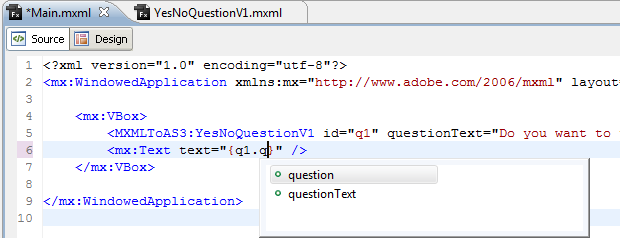

###! Frictionless Development
To explore the principle behind frictionless front-end development, let me introduce Idio. Idio is a [professional web server](index) which has been compiled with Closure, and has only 2 dependencies. It consists of ES6-rewritten Koa with a collection of middleware, but it also allows to develop JavaScript for the browser. To enable the web development process, it ships with our in-house *FrontEnd* middleware — one of the modules-era nimble tools that does the following:
#### 1. You specify the directory with your frontend code, e.g., `frontend`.
For example, you can have the following source in ``frontend/index.js``:
```js
import { dep } from 'my-dep'
import local from './local'
const el = document.querySelector('#id')
dep(el) // execute dependency
local(el) // execute local
```
When the browser requests this JS module via a script tag, ``, *FrontEnd* will intersect the request, and lookup `my-dep` in your ``node_modules``, to find its _package.json_. From there, the *module* field will be read, and the served file will actually contain absolute paths required by the browser. Local dependencies can also be served, which would be impossible under normal circumstances when the extension (`.js`) is not present, but the middleware can handle that.
```js
import { dep } from '/node_modules/my-dep/src/index.js'
import local from './local'
const el = document.querySelector('#id')
dep(el) // execute dependency
local(el) // execute local
```
Now the browser can import the dependency natively. The middleware will return any JS file under the ``/node_module`` path, enabling direct dependency serving, without having to wrap anything in vendor modular system. This simple step drastically reduces the complexity of the tool-chain, as it's the browser that's doing most of the work from this point onwards. On-the-fly modifications of paths are made with the simplest RegEx that picks up `import` statements.
#### 2. You write JSX code in your frontend.
JSX is positively THE BEST templating syntax for web development, and there's no doubt about that. Although it was initially developed by React, its roots actually go much deeper than that, as MXML (Flash applications) used to have similar structure.

© [Jeffry Houser](https://www.jeffryhouser.com/index.cfm/2012/1/3/Moving-your-Flex-Components-from-MXML-to-ActionScript-3) 2012
JSX is a revival of MXML and an essential part of programming of the web. There's an interesting alternative to JSX called `lit-html` but it makes no sense why I should use template literals when writing tags. It's simply a hack to eliminate JSX transpilation, but it's not a replacement for JSX, which is the daddy of modern web computing.
An example of using lit html is the following:
© F1LT3R 2020, [`hybrids-dynamic-load`](https://github.com/F1LT3R/hybrids-dynamic-load).
The advantage of this over JSX is that it doesn't require transpilation and can be run natively within a browser. The disadvantage is that there's no syntax highlighting (unless you use a plugin) and it's not as fluent as JSX that doesn't require calling `html` function to start a template block.
You might be thinking that to transpile JSX you need Babel, but the fact is that you don't. You don't need to build ASTs and you don't need to install additional 250 dependencies that come with Babel, another "established" standard of coding. *FrontEnd* uses a [JSX transpiler](https://github.com/a-la/jsx) powered by regular expressions. It includes a hack to find where the initial tag (``<``) is opening by evaluating the jsx file using the `vm` module of Node.JS. The tag is detected by listening to an error:
```jsx
/Users/zavr/a-la/jsx/test/fixture/Component.jsx:2
^
SyntaxError: Unexpected token <
```
This evaluation is needed to prevent false positives, e.g., `if (a` in properties, e.g.,
But methods like that simply need to be taken out of the tag scope. You're probably not going to replace Webpack with Idio at your corporate insurer job, but if you're working for fun projects, there's no reason why you can't be using this. Except for that there's no source maps, which will be added later on this year, but because the code produced looks absolutely natural, it's easy to debug it anyway (unless you've got the super-power setup where your VS Code debugger hooks up to a running Chrome RDP process).
```js
// JSX - compiled code
import { render, Component } from 'preact'
class App extends Component {
constructor() {
super()
this.state = { name: 'world' }
}
render({ message }) {
return (h('div',{},
`Hello, `,h('span',{},this.state.name),
h('p',{},
message,
),
))
}
}
render(h(App,{message:"Idio"}), document.querySelector('.app'))
```
I've created many [widgets](https://akashic.page), [front-end apps](https://github.com/art-deco/file-upload.artdeco.app) and back-end servers with SSR powered by this transpiler. There hasn't been any problems. Maybe it will throw errors on some very advanced edge use cases (never happened for me, although your usage might be something I've never tested), but simplifying code will always help. Its simplicity is the key.
In short, with the *FrontEnd* middleware from Idio, I was able to bypass the build step for development stage, which is the most prevalent one in any web UI life cycle. By testing modern code right in a modern browser, I can reduce the friction between my actual ES6 modules (which actually have been a standard since 2015), and the browser. Transforms on JSX are done real-time but don't introduce any additional modular complexity.